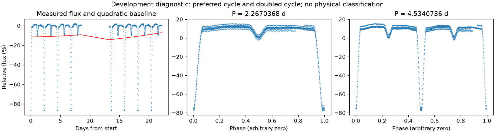
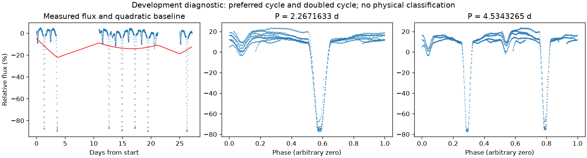
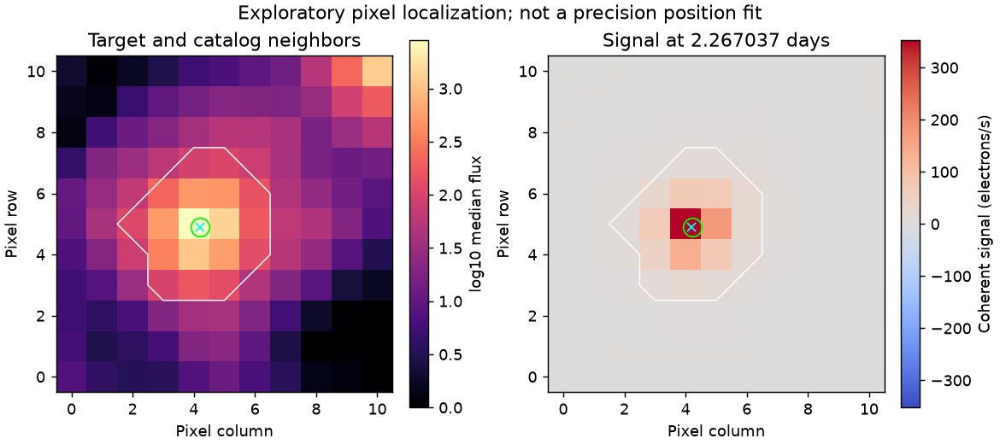
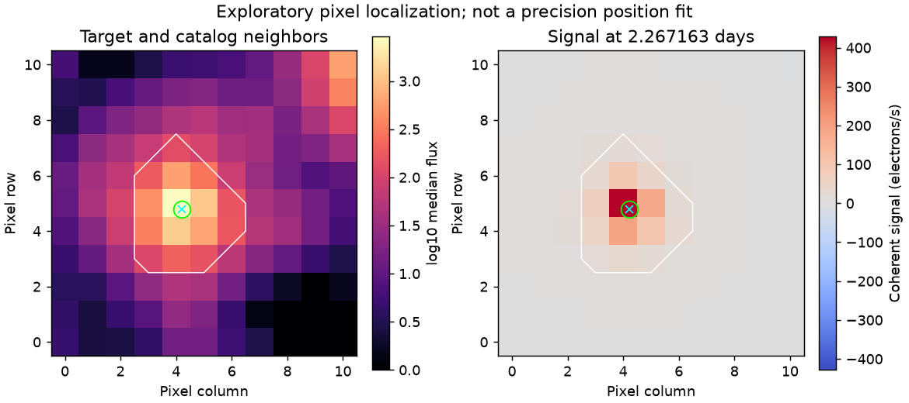

存在来源疑点，保留人工复核
亮度重复周期约 2.26710002 天。这是优选亮度周期，未给出正式误差或物理分类。
第三版周期：2.267036775630906 天；状态：preferred_lightcurve_cycle。

左图红线是缓慢基线；右面两图去除该基线。若未通过周期要求，两图只展示得分最高的竞争解释。
| 竞争周期（天） | 预测方法与改善 | 各组改善 | 通过初筛 |
|---|---|---|---|
| 2.2670368 | 交替循环：99.5% | 99.6% / 99.4% | 是 |
| 4.5332004 | 交替循环：99.2% | 99.2% / 99.2% | 是 |
| 1.1332094 | 交替循环：-48.3% | -62.2% / -37.0% | 否 |
| 0.2829977 | 交替循环：-53.8% | -52.4% / -55.1% | 否 |
| 0.5665790 | 交替循环：-77.7% | -96.0% / -63.4% | 否 |
“预测改善”衡量用一组周期的形状预测另一组，比只有缓慢基线好多少；负数表示更差。搜索和预测共用了资料，因此这不是可信概率，也不是独立验证。
辅助数据检查：背景 SAP_BKG、指向修正 POS_CORR、亮斑中心 MOM_CENTR，或明确提供的仪器通道。
相关性只提示需要检查来源。恒星自身变暗也可能导致亮斑中心移动，不能据此断定是仪器。
第三版周期：2.2671632615202304 天；状态：preferred_lightcurve_cycle。

左图红线是缓慢基线；右面两图去除该基线。若未通过周期要求，两图只展示得分最高的竞争解释。
| 竞争周期（天） | 预测方法与改善 | 各组改善 | 通过初筛 |
|---|---|---|---|
| 4.5344818 | 交替循环：98.1% | 97.4% / 98.8% | 是 |
| 2.2671633 | 交替循环：97.5% | 98.1% / 97.0% | 是 |
| 1.1340028 | 交替循环：-45.8% | -295.3% / -11.3% | 否 |
| 0.2829951 | 交替循环：-55.4% | -35.6% / -197.0% | 否 |
| 0.5671489 | 交替循环：-80.6% | -45.7% / -340.6% | 否 |
“预测改善”衡量用一组周期的形状预测另一组，比只有缓慢基线好多少；负数表示更差。搜索和预测共用了资料，因此这不是可信概率，也不是独立验证。
辅助数据检查：背景 SAP_BKG、指向修正 POS_CORR、亮斑中心 MOM_CENTR，或明确提供的仪器通道。
相关性只提示需要检查来源。恒星自身变暗也可能导致亮斑中心移动，不能据此断定是仪器。

